시작 전에: 클로드 코드와 네 가지 기준
발표자는 인터넷에서 모은 부업 아이디어가 아니라, 자기와 주변 사람이 실제로 돈을 벌어 본 사례를 기준으로 순위를 매긴다고 밝혀요. 직접 해 본 것은 글 작성 자동화, 전자책·강의 판매, 프로그램 개발 외주예요. 기준은 'AI니까 될 것 같다'가 아니라 '실제로 돈을 내는 사람이 있는가'예요.
처음 배운다면 클로드 코드부터
아무것도 모르는 상태에서 다시 시작한다면 클로드 코드부터 쓰겠다고 해요. 바이브 코딩을 처음 한다면 코딩 언어를 하나씩 외우기보다, 원하는 결과를 AI에게 설명하고 직접 만들어 보는 데서 출발하라는 거예요.
클로드 코드를 개발자 전용 도구로 보지 말라는 말도 덧붙여요. 홈페이지나 프로그램을 만들고, 글쓰기를 자동화하고, 자료를 정리하고, 반복 업무를 줄이는 데 다 쓸 수 있어요. 그래서 '사업을 같이 운영하는 직원 한 명을 컴퓨터 안에 넣어 두는 것'에 가깝다고 비유해요.

오늘 순위를 매기는 네 가지 기준
결국 중요한 건 '무엇을 만들어서 누구의 문제를 풀고, 그걸 어떻게 돈으로 바꿀 것인가'예요. 이 질문을 네 가지 기준으로 나눠서 각 부업을 평가해요.

영상에 나온 순위를 한눈에 보면 이래요. 아래 섹션에서 하나씩 풀어요.
| 등급 | 부업 | 발표자가 꼽은 이유 |
|---|---|---|
| F | AI 쇼츠 완전 자동화 | 누구나 10분 만에 똑같이 만들 수 있어요 |
| D | AI 디지털 파일 판매 | 만들기 쉬워 경쟁력이 아니고, 니치와 판매 능력이 좌우해요 |
| C | PPT·제안서 제작 | 수요는 확실하지만 수정 요청이 끝없이 이어져요 |
| B | 전자책·강의 | 여러 번 팔 수 있지만 팔 사람이 먼저 있어야 해요 |
| B | 네이버 홈판 글 자동화 | 첫 수익까지 오래 걸리고 플랫폼에 기대요 |
| B | 홈페이지 제작 | 첫 매출엔 좋지만 반복 매출이 약해요 |
| A | 랜딩페이지 제작 | 판매 구조까지 팔면 단가가 올라가요 |
| A | AI 프로그램 개발 외주 | 한 건으로 목표에 가깝지만 유지보수 책임이 있어요 |
| A | SNS 운영 대행 | 매달 계약이 이어지지만 결과물을 꾸준히 내야 해요 |
| A+ | AI 업무 자동화 | 유지보수까지 이어 반복 매출을 만들 수 있어요 |
| S | 유튜브 운영 대행 | 고객 하나로 월 50만 원을 넘겨요 |
| SS | AI 콘텐츠·마케팅 대행 | 지금까지의 모든 일을 하나로 이어요 |
F급·D급: 누구나 똑같이 만들 수 있는 것
맨 아래 두 등급은 이유가 같아요. AI 덕분에 만들기 쉬워진 것을 그대로 경쟁력으로 착각한다는 거예요. 발표자는 두 방법 모두 '돈을 아예 못 번다'는 게 아니라고 여러 번 강조해요. 초보자가 하루 30분으로 월 50만 원을 안정적으로 만들기엔 어렵다는 뜻이에요.
F급 — AI 쇼츠 완전 자동화
AI로 주제를 찾고, 대본을 쓰고, AI 음성을 입히고, 영상까지 만들어 하루 10~20개씩 자동으로 올리는 방식이에요. '하나만 터지면 자는 동안에도 돈이 들어온다'는 말이 붙곤 해요.
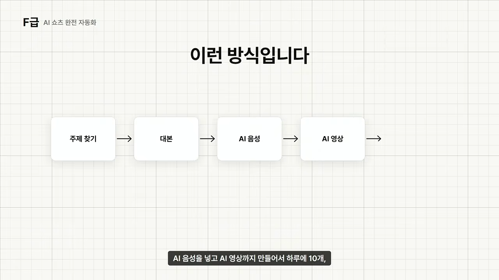
문제는 내가 10분 만에 만들 수 있으면 전 세계 누구나 10분 만에 만든다는 점이에요. 조회수는 내가 통제할 수 없고, 비슷한 영상은 계속 쏟아지고, 한 편이 터져도 다음 편이 터진다는 보장이 없어요.
그렇다고 쇼츠를 하지 말라는 건 아니에요. 쇼츠를 유입 수단으로 쓰는 건 좋다고 해요. 내 상품, 내 롱폼 영상, 내 서비스로 사람을 보내는 용도예요. F급인 건 '하루 20개 자동 업로드로 광고 수익이 알아서 쌓인다'를 사업 모델로 삼는 경우예요.
AI를 사용하는게 문제가 아닙니다. AI 때문에 누구나 대량 생산할 수 있는 걸 경쟁력이라고 착각하는게 문제입니다.
— 영상 06:17
D급 — AI 디지털 파일 판매
플래너, 체크리스트, 워크시트, 캔바·노션 템플릿, 포스터 같은 파일을 AI로 빠르게 만들어 Etsy나 국내 마켓에 올려 파는 방식이에요. 재고도 배송도 없고, 한 번 만든 파일을 여러 번 팔 수 있어요.

마진이 거의 100%라 잘하는 사람은 분명히 벌어요. 그래서 F급보다는 위예요. 하지만 '직장인을 위한 주간 생산성 플래너'를 시키면 누구나 비슷한 결과를 얻어요. 결국 무엇을 만드느냐보다 누구에게 파느냐가 중요해요.
| 막연한 상품 | 고객을 좁힌 상품 |
|---|---|
| 예쁜 다이어리 | ADHD 직장인을 위한 하루 15분 업무 정리 플래너 |
| 영어 공부 템플릿 | 토익 700점 직장인을 위한 30일 단어 복습 템플릿 |
흔한 실수는 AI로 파일 100개를 만들어 전부 올리는 거예요. 안 팔리는 상품 100개를 빨리 만드는 건 사업이 아니에요. AI 활용 능력보다 니치를 찾고 파는 능력이 더 중요한 영역이라 D급이에요.
C급: PPT·제안서는 왜 애매할까요?
회사, 강사·컨설턴트, 학원, 병원은 계속 발표 자료를 만들어요. 이미 돈을 내는 고객이 많다는 점에서 D급보다 현실적이라고 봐요.
바로 슬라이드부터 만들지 않기
고객이 50페이지짜리 보고서를 주며 '발표 자료 20장으로 만들어 주세요'라고 했다고 해 볼게요. 예전엔 보고서를 끝까지 읽고, 핵심을 뽑고, 순서를 짜고, 슬라이드로 옮겨야 했어요. 클로드 코드에는 먼저 '바로 PPT부터 만들지 말고, 발표 목적 기준으로 분석해서 20장짜리 스토리라인부터 만들어 줘'라고 시킬 수 있어요.

왜 C급일까요? 수정 지옥
수정도 AI에게 시키면 일부는 줄일 수 있어요. 진짜 문제는 AI가 아니라 사람에게서 터져요. '폰트 조금만 키워 주세요', '아까 버전이 좋은 것 같아요'처럼 요구 자체가 계속 바뀌면, AI가 아무리 빨라도 시간이 계속 들어가요.
그래서 이 일을 한다면 상품을 결과 중심으로 만들라고 해요. 수정 횟수도 처음부터 정해 두는 게 좋아요.

수요는 확실하지만 하루 30분 부업으로 만들기엔 애매해서 C급이에요.
B급: 전자책·강의, 블로그 자동화, 홈페이지
B급 세 가지는 모두 실제로 돈이 되지만, 각각 한 가지씩 발목을 잡는 점이 있어요. 전자책·강의는 살 사람, 블로그는 시간과 플랫폼, 홈페이지는 반복 매출이에요. 앞의 두 가지는 발표자가 직접 수익을 내 본 방법이에요.
전자책과 강의 — 내가 겪은 걸 상품으로
'전자책 한 권 써 줘'로 나온 글을 PDF로 파는 건 발표자도 추천하지 않아요. AI에게 지식을 만들어 달라는 게 아니라, 내가 실제로 겪은 지식을 AI로 상품화하는 거예요.
예를 들어 클로드 코드로 홈페이지를 여러 번 만들었다면 쌓이는 게 있어요. 설치하다 막힌 부분, 잘된 프롬프트와 실패한 프롬프트, 고객이 많이 묻는 질문, 돈 받고 일하며 새로 알게 된 것들이에요. 이걸 계속 기록해 두었다가 '한 달 동안 기록한 내용을 읽고 초보자가 결과물을 하나 만드는 순서대로 목차를 정리해 줘'라고 시켜요.

B급에 머무는 이유는 팔 사람이 있어야 하기 때문이에요. 많은 사람이 전자책 100페이지, 강의 20시간을 먼저 만들고 마지막에 어디서 팔지 고민해요. 발표자는 순서를 반대로 하라고 해요.
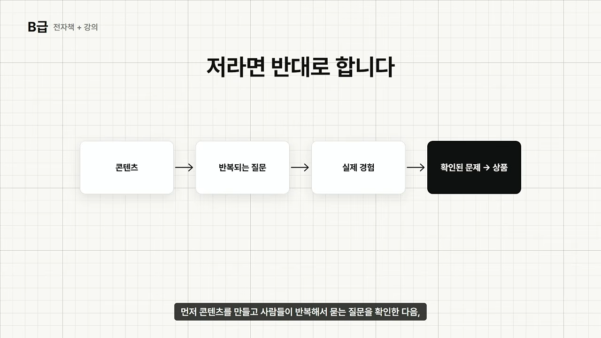
외주는 고객 10명이면 10번 일해야 하지만, 전자책이나 녹화 강의는 한 번 만든 걸 여러 명에게 팔 수 있어요. 이 장점 덕분에 B급은 충분하다고 봐요.
네이버 홈판 글 자동화 — 쓰레기 대량 생산과 구분하기
발표자가 직접 자동화해 수익까지 낸 방식이에요. 직접 해 보니 AI가 썼는지 사람이 썼는지보다, 사람들이 실제로 보고 싶은 글이었는지가 더 중요했다고 해요. 아무 키워드로 글 100개를 뽑아 올리는 건 자동화가 아니라 쓰레기 대량 생산이라고 선을 그어요.
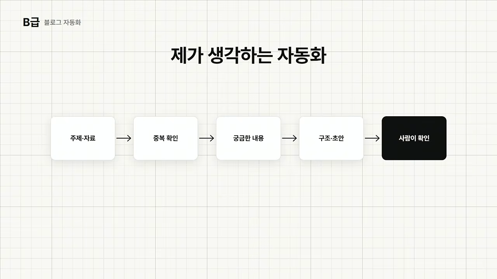
클로드 코드 프로젝트에는 기존 글, 키워드, 조회수가 잘 나온 글, 제목, 카테고리, 자료 출처, 선호하는 글 구조를 쌓아 둘 수 있어요. 그다음 '기존 글과 겹치지 않는 주제를 찾아 줘', '바로 쓰지 말고 독자가 원하는 답이 먼저 나오게 구조를 잡아 줘'처럼 작업을 이어 가요.
그래도 외주처럼 '30만 원 주세요' 하고 바로 받는 구조가 아니에요. 글을 썼다고 바로 노출되지 않고, 모든 글이 홈판에 뜨지도 않고, 모든 방문자가 애드포스트 수익이 되지도 않아요. 첫 수익까지 시간과 플랫폼 의존성 때문에 B급이에요.
홈페이지 제작 — 포트폴리오부터
예전엔 HTML·CSS·자바스크립트와 디자인을 공부해야 했지만, 지금은 클로드 코드 덕분에 진입장벽이 훨씬 낮아졌어요. 중요한 건 코드 실력이 아니라 고객이 원하는 홈페이지를 파악하는 능력이에요.
처음엔 고객부터 찾지 말고 미용실, 필라테스, 세무사 같은 업종을 하나 골라 가상의 포트폴리오를 몇 개 만들라고 해요. 이때도 그냥 '미용실 홈페이지 만들어 줘'가 아니라 기획부터 시켜요.
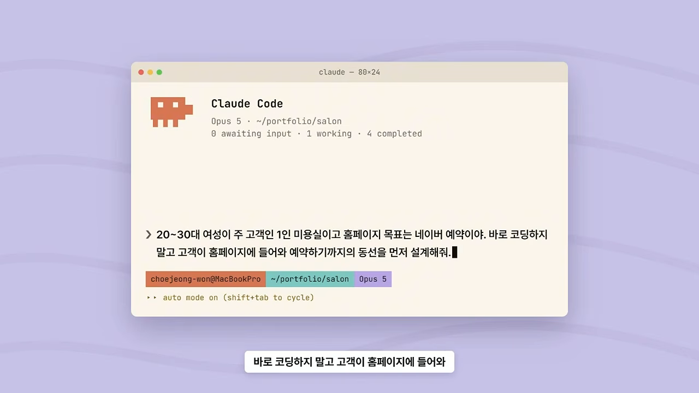
결과물을 만든 뒤에는 예약 버튼, 가격표, 모바일 화면을 고치며 완성도를 올려요. 포트폴리오가 쌓이면 20~30만 원이라도 실제 고객에게 받아 보는 게 첫 목표예요. 다만 한 번 만들면 끝나는 경우가 많아 반복 매출이 약해서 B급이에요.
A급: 랜딩페이지, 프로그램 외주, SNS 운영 대행
A급부터는 '무엇을 만들어 드려요'가 아니라 '고객의 무엇을 바꿔 드려요'로 파는 일이에요. 한두 건만 받아도 월 50만 원에 닿는다는 점이 B급과 달라요.
랜딩페이지 제작 — 판매 구조를 판다
홈페이지가 사업을 소개한다면, 랜딩 페이지는 상품 하나를 팔기 위한 페이지예요. 온라인 강의, 전자책, 컨설팅, 학원 모집, 병원 이벤트 같은 곳에 쓰여요.
'웹페이지 예쁘게 만들어 드려요'로는 단가가 오르지 않아요. 대신 '상품 판매 구조부터 카피라이팅, 디자인, 페이지 제작까지'로 팔라고 해요. 고객 상품을 분석해 누가 왜 살지 정리한 다음, 페이지 전체를 하나의 흐름으로 설계해요.
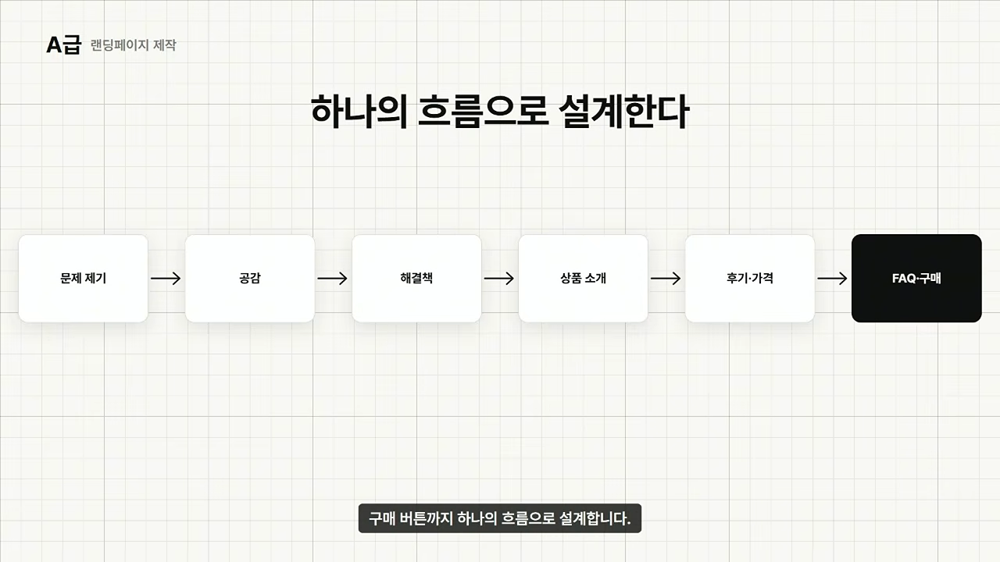
계산도 간단해요. 25만 원짜리 두 건이면 월 50만 원이라 A급이에요.
AI 프로그램 개발 외주 — 작은 반복 불편을 푼다
발표자가 직접 고객에게 돈을 받고 해 본 방식이에요. '코딩도 못 하는 사람이 남의 프로그램을 만든다고요?'라는 물음에 가능하다고 답해요. 다만 클로드 코드만 있으면 개발 지식이 전혀 필요 없다는 뜻은 절대 아니라고 못 박아요.
거대한 앱이 아니라 작은 도구부터예요. 쇼핑몰 사장님이 매일 30분씩 주문 엑셀을 열어 열을 지우고, 상품별로 나누고, 매출을 계산해 보고서로 만든다고 해 볼게요. 엑셀 파일 하나를 넣으면 이 정리가 자동으로 끝나는 프로그램을 만들어 주는 거예요.
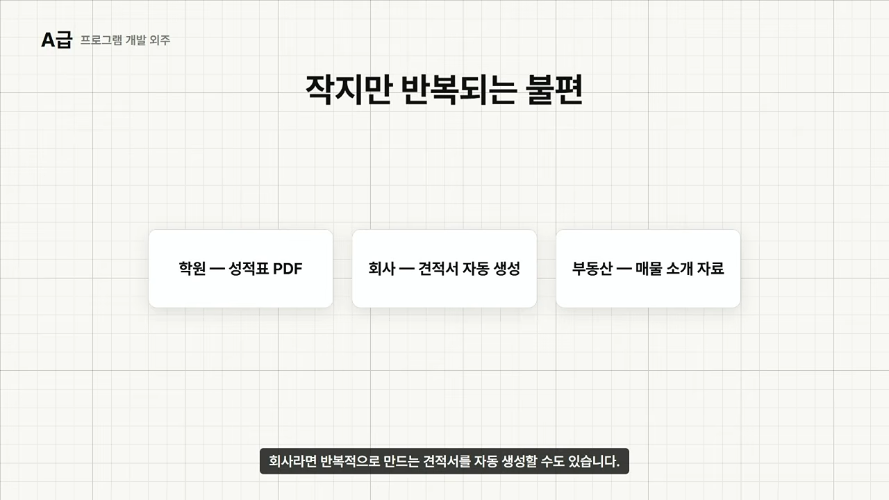
직접 해 보며 느낀 점은 고객이 '어떤 언어로 개발했어요?'를 궁금해하지 않는다는 거예요. 고객이 궁금한 건 '그래서 내 일이 편해지나요?'예요. 그래서 'AI 프로그램 개발해 드려요'보다 '매일 30분 걸리던 엑셀 작업을 버튼 한 번으로 끝내 드려요'가 훨씬 강하다고 해요.
A급에 머무는 이유는 오류와 책임이에요. 고객 컴퓨터에서 안 돌 수도 있고, 엑셀 양식이나 쓰던 API가 바뀔 수도 있고, 예상 못 한 데이터가 들어올 수도 있어요.
그래도 비개발자가 들어올 수 있는 장벽은 분명히 낮아졌어요. 고객의 시간을 실제로 줄여 주는 프로그램이라면 한 건으로도 월 50만 원에 가까워져요. 유지보수와 책임 때문에 A급이에요.
SNS 운영 대행 — 다음 달에도 해야 하는 일
사업자들은 SNS가 필요하다는 걸 알지만 대부분 시간이 없어요. 진료하고 직원 관리하고 병원 운영하는 피부과 원장님이 '이번 주 인스타에 뭘 올리지?'까지 고민하긴 어려워요. 이 귀찮은 일을 대신 맡는 거예요.
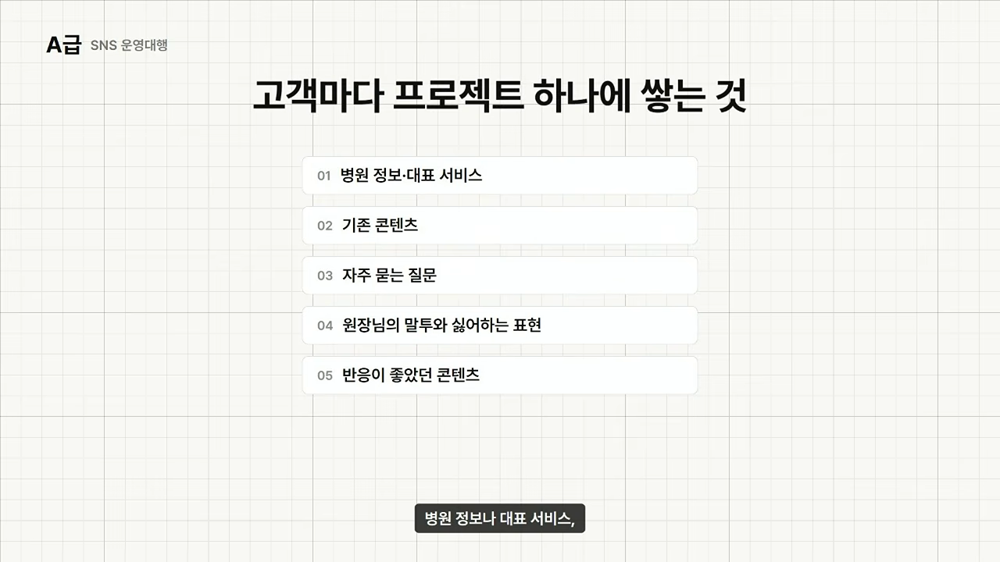
홈페이지와 가장 다른 점은 다음 달에도 SNS는 해야 한다는 거예요. 고객 한 곳과 월 50만 원을 계약하면 바로 목표를 이뤄요. 다만 매달 꾸준히 결과물을 내야 해서 S급이 아니라 A급이에요.
A+·S·SS급: 고객의 일하는 방식을 맡는 일
위쪽 세 등급은 작은 결과물 하나가 아니라 고객 회사의 일하는 방식이나 채널 자체를 맡는 일이에요. 고객에 대한 데이터가 쌓일수록 내가 더 빨라지고, 남은 따라오기 어려워져요.
A+급 — AI 업무 자동화
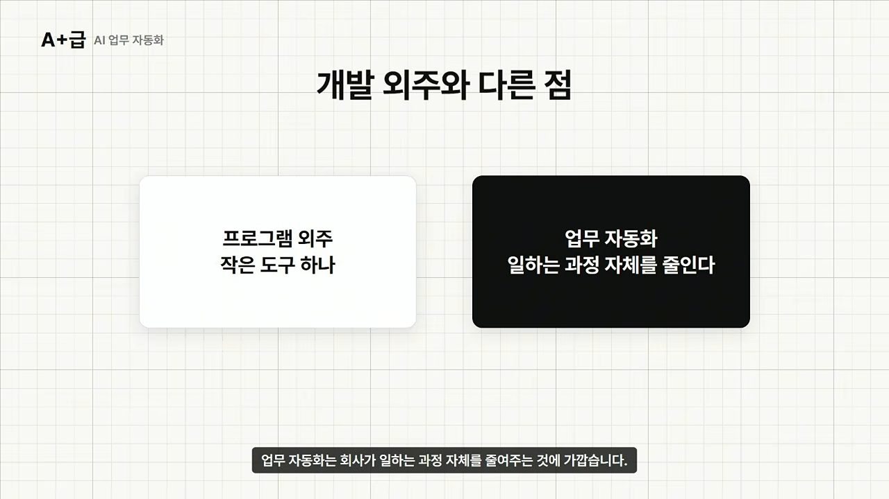
예를 들어 직원이 매주 경쟁사 홈페이지에서 새 상품과 가격을 확인하고, SNS까지 보고, 엑셀로 정리하는 데 세 시간이 걸린다고 해 볼게요. 이때 'AI 자동화 구축해 드려요'라고 하지 말고 '매주 세 시간 걸리던 경쟁사 조사를 30분으로 줄여 드려요'라고 말하라고 해요.
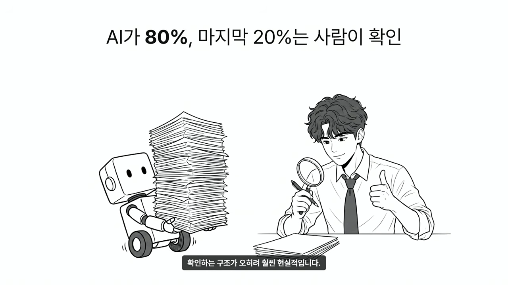
한 번 구축하고 끝나는 게 아니라 유지보수로 이어지면 반복 매출이 생겨요. 그래서 A+급이에요.
S급 — 유튜브 운영 대행
단순 영상 편집 외주가 아니에요. 기획, 벤치마킹, 대본, 촬영 가이드, 제목, 썸네일, 편집까지 하나의 상품으로 묶어요.
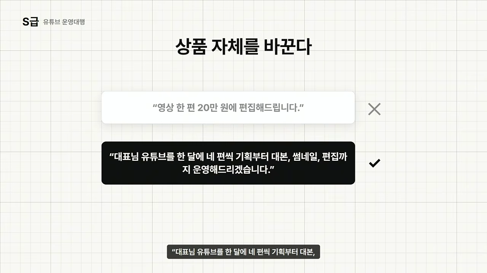
여기서도 고객별 클로드 코드 프로젝트에 기존 영상, 잘된 영상과 안 된 영상, 경쟁 채널, 댓글, 대표님 말투, 서비스 정보를 쌓아요. 벤치마킹할 땐 조회수만 보지 말라고 해요. 구독자 100만 채널의 조회수 20만보다, 구독자 1만 채널의 조회수 30만이 더 중요한 힌트일 수 있어요. 채널 평균보다 유독 잘된 아웃라이어 영상을 찾으라는 거예요.
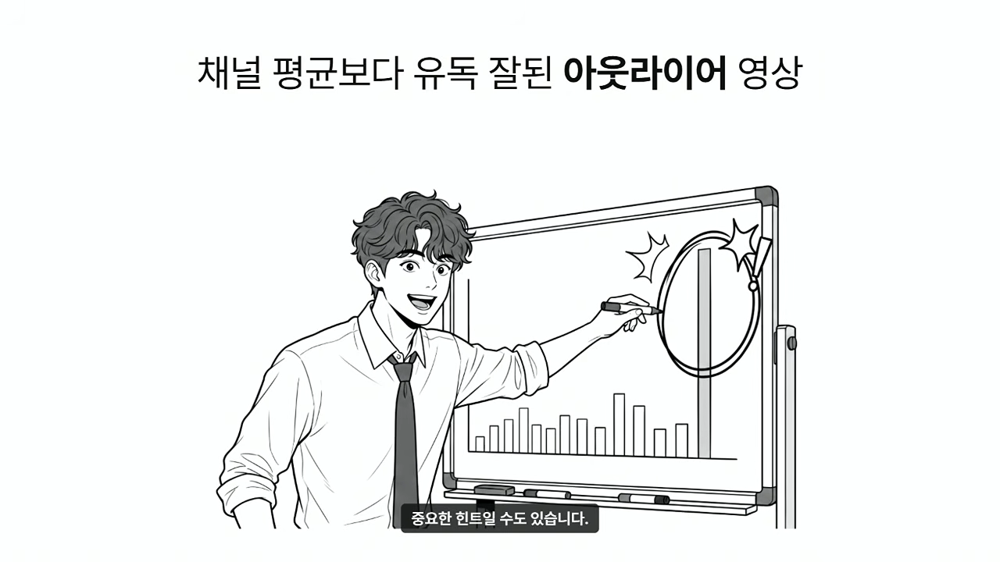
고객 하나만 확보해도 월 50만 원을 훌쩍 넘을 수 있어서 S급이에요.
SS급 — AI 콘텐츠·마케팅 대행
맨 위는 지금까지의 일을 전부 하나로 잇는 자리예요. 홈페이지, 프로그램과 자동화, SNS와 블로그, 유튜브, 랜딩페이지를 한 고객에게 이어서 해 줄 수 있어요.

처음엔 SNS 하나만 맡았다고 해 볼게요. 일하다 보면 홈페이지 예약 구조의 문제가 보여서 고쳐 줘요. 직원들의 반복 업무가 보이면 작은 프로그램을 만들고, 유튜브가 필요하면 운영까지 맡아요.
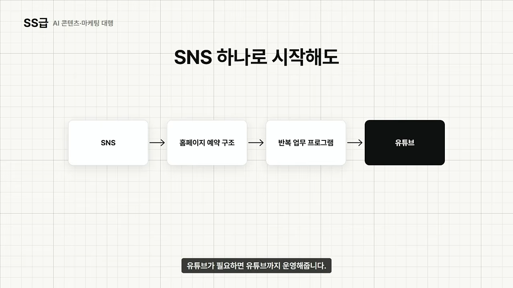
프로젝트 안에는 어떤 콘텐츠가 잘됐는지, 고객들이 무엇을 묻는지, 대표님이 싫어하는 표현, 직원들이 반복하는 업무가 계속 쌓여요. 새 경쟁자는 이걸 처음부터 배워야 하지만, 나는 이미 알고 있어요. 물론 초보자가 바로 할 일은 아니에요. 홈페이지 하나, 프로그램 하나, SNS 고객 하나처럼 작은 경험이 쌓인 뒤에 올라오는 자리예요.
AI로 돈을 번다는 것
마지막 구간은 '결국 AI로 돈 번다는 건 일부 사람 이야기 아닌가요?'라는 질문에 대한 답이에요. 발표자도 AI가 처음 나왔을 땐 이걸로 정말 돈을 받을 수 있을지 의심했다고 해요.
돈을 받은 이유는 AI가 아니라 결과였어요
전자책·강의, 글 작성, 프로그램 외주 모두 마찬가지였다고 해요. 고객은 발표자가 클로드를 잘 써서 돈을 낸 게 아니라, 원하는 결과가 나와서 돈을 냈어요.
AI로 돈을 벌려고 하지 마세요. AI를 이용해서 누군가가 돈을 내고 싶어 하는 결과물을 만드세요.
— 영상 29:29
처음이라면 무엇부터
경험도 없고 AI도 사업도 처음이라면 눈에 보이는 결과물 하나부터 만들라고 해요. 홈페이지, 랜딩페이지, 간단한 프로그램 무엇이든 좋아요. 전자책을 쓰고 싶다면 그 주제로 경험부터 쌓고, 블로그를 하고 싶다면 글 100개 자동 생성 대신 좋은 글 하나를 직접 만들어 보라고 해요. 그리고 5만~10만 원이라도 시장에 내놓아 누군가 처음으로 돈을 내는 경험을 하라고 해요.
돈을 받기 전엔 '클로드 코드에 무슨 기능이 있지?'를 보게 돼요. 받고 나면 '고객은 왜 샀지?', '어디에 시간이 가장 오래 걸렸지?', '이걸 반복 매출로 바꿀 수 없을까?'를 보게 돼요. 발표자는 이때부터 AI 공부가 사업 공부로 바뀐다고 해요.
티어보다 중요한 것 — 하나로 잇기
발표자는 오늘의 티어보다 이 일들을 따로 하지 않는 게 더 중요하다고 말해요. 클로드 코드로 프로그램을 만든 과정을 유튜브에 올리면, 그걸 본 사람이 첫 고객이 돼요. 그 고객 일에서 새 문제가 보이고, 그걸 자동화한 과정이 다시 콘텐츠가 돼요. 기록을 모으면 전자책과 강의가 되고, 강의를 본 사람이 다시 외주 고객이 돼요.
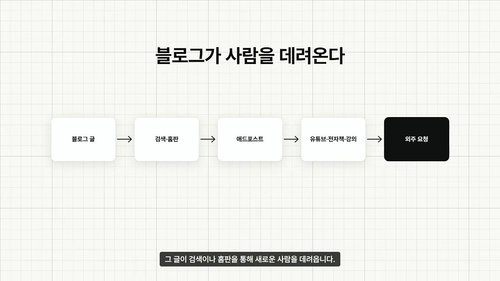
결국 콘텐츠가 고객을 데려오고, 고객 경험이 상품이 되고, 그 상품이 새 고객을 데려오는 구조예요. AI 하나로 갑자기 월 천만 원을 버는 마법이 아니라, 혼자 할 수 있는 일의 범위를 AI로 계속 넓혀 가는 거라고 정리해요.
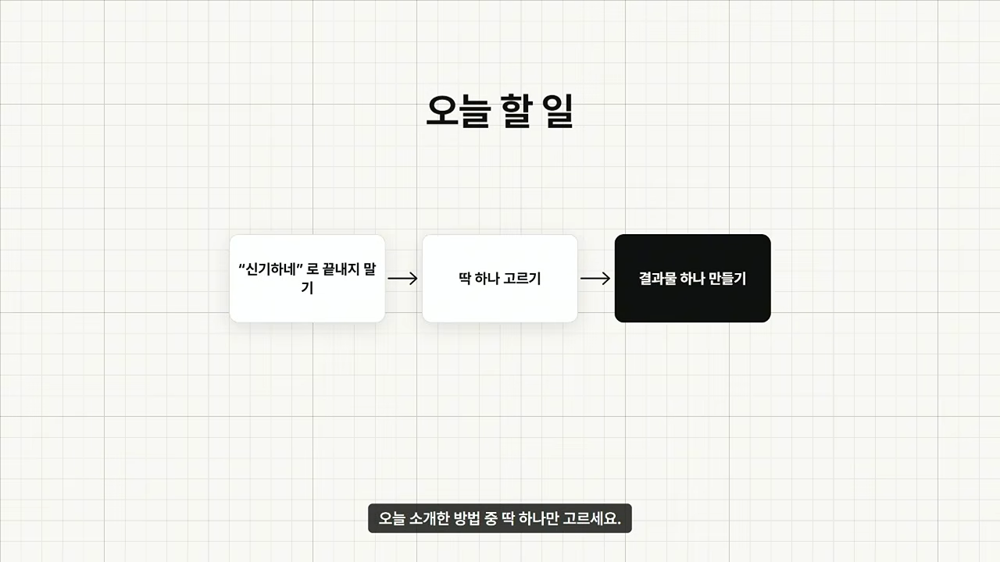